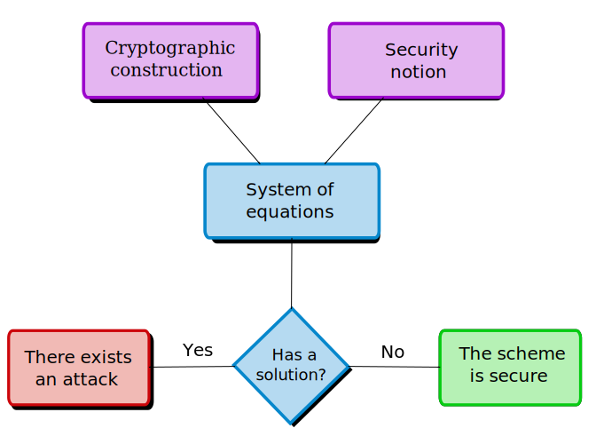

1. Example
As mentioned in the Introduction, the tool is designed to prove computational statements, i.e., experiments where it is supposed to be hard, for a polynomial adversary, to compute certain information without the knowledge of some secret. To illustrate the adversary's point of view, we are going to start with a toy example: a signature scheme which is in fact insecure.
Insecure Structure-Preserving Signature scheme in Type III
-
Setup ${\cal P}(1^{\lambda})$:
Return $\mathit{PP} = (p, \mathbb{G}_{1}, \mathbb{G}_{2}, \mathbb{G}_{T}, g_{1}, g_{2}, e) \leftarrow {\cal G}(1^{\lambda})$, where ${\cal G}$ is an efficient algorithm that on input $1^{\lambda}$ outputs a description of a bilinear group in Type III, with groups of order $p$ for a $\lambda$-bit prime $p$. -
Key generation ${\cal K}(\mathit{PP})$:
Choose $v,w \stackrel{\$}{\leftarrow} \mathbb{Z}_{p}^{*}$ and compute $\mathit{VK} = (\mathit{PP}, V, W)$ and $\mathit{SK} = (\mathit{PP}, v, w)$ as $$ V \leftarrow g_{1}^{v} \ \text{ and } \ W \leftarrow g_{1}^{w}$$ -
Signing ${\cal S}_{\mathit{SK}}(M)$:
For $M \in \mathbb{G}_{2}$, compute the signature $S \in \mathbb{G}_{2}$ as $S \leftarrow M^{v} \cdot g_{2}^{w}$. -
Verification ${\cal V}_{\mathit{VK}}(M, S)$:
Accept if and only if $M,S \in \mathbb{G}_{2}$ and $e(g_{1}, S) = e(V,M) \cdot e(W,g_{2})$.
There is no polynomial time adversary that can produce a valid signature (with significant probability) on a new message without the knowledge of the secret key, even if she has access to a signing Oracle that produces valid signatures for messages of her choice.
The initial adversary's knowledge consists of the structure of the scheme and the verification key. In terms of group elements, she has access to $g_{1}, V, W \in \mathbb{G}_{1}$ and $g_{2} \in \mathbb{G}_{2}$, where $g_{1}$ and $g_{2}$ are generators of their respective groups and $V = g_{1}^{v}, W = g_{1}^{w}$ for unknown values $v,w \in \mathbb{Z}_{p}$.She must produce a forgery, i.e., a pair of elements $\hat{M}, \hat{S} \in \mathbb{G}_{2}$ that satisfy the verification equations. Due to the Generic Group Model restriction, she must produce $\hat{M}$ and $\hat{S}$ as a linear combination (in the exponent) of the elements that she knows. In fact, this linear combination must be of elements that she knows in $\mathbb{G}_{2}$ (because $\hat{M}, \hat{S} \in \mathbb{G}_{2}$). We note that she has Oracle access to sign messages of her choice. This will give her access to more elements in $\mathbb{G}_{2}$ that can be used in the linear combination to form the forgery.
Assuming she performs $q \in \mathbb{N}$ queries to the Oracle. All she can do to produce the forgery is to choose coefficients $\mu_{0}, \mu_{1}, \cdots, \mu_{q}, \sigma_{0}, \sigma_{1}, \cdots, \sigma_{q} \in \mathbb{Z}_{p}$ and compute the forgery as: $$ \hat{M} = g_{2}^{\mu_{0}} \cdot \prod_{i=1}^{q}S_{i}^{\mu_{i}} \ \ \ \text{ and } \ \ \ \hat{S} = g_{2}^{\sigma_{0}} \cdot \prod_{i=1}^{q}S_{i}^{\sigma_{i}} $$ where $S_{i} \in \mathbb{G}_{2}$ is the signature returned by the Oracle in the $i$-th query (on input $M_i \in \mathbb{G}_{2}$). We note that $M_i$ messages are computed by the adversary in a similar way. This is, $$ M_j = g_{2}^{\alpha_{j,0}} \cdot \prod_{i=1}^{j-1}S_{i}^{\alpha_{j,i}} $$ for some coefficients $\alpha_{j,0}, \dots, \alpha_{j,j-1} \in \mathbb{Z}_{p}$.
We say that the security experiment is satisfiable if there exist $q \in \mathbb{N}$ and coefficients $\mu_{0}, \mu_{1}, \cdots, \mu_{q}, \sigma_{0}, \sigma_{1}, \cdots, \sigma_{q} \in \mathbb{Z}_{p}$ producing a valid forgery $(\hat{M}, \hat{S})$, i.e., satisfying the verification equations: $$ e(g_{1},\hat{S})=e(V,\hat{M})\cdot e(W,g_{2}) \ \ \ \ \text{ and } \ \ \ \ \forall i \in \{1,\dots, q\}. \ \hat{M} \neq M_{i} $$
Note that, if we work in the exponent, the forgery becomes a linear combination (we use lower case letters to represent discrete logarithms of group elements): $$ \hat{m} = \mu_{0} + \sum_{i=1}^{q}\mu_{i}\cdot s_{i} = \mu_{0} + \sum_{i=1}^{q}\mu_{i}\cdot(m_i \cdot v + w) $$ $$ \hat{s} = \sigma_{0} + \sum_{i=1}^{q}\sigma_{i} \cdot s_{i} = \sigma_{0} + \sum_{i=1}^{q}\sigma_{i} \cdot (m_i \cdot v + w) $$ and the verification equations become: $$ \sigma_{0} + \sum_{i=1}^{q}\sigma_{i} \cdot (m_i \cdot v + w) = v \cdot \left(\mu_{0} + \sum_{i=1}^{q}\mu_{i}\cdot(m_i \cdot v + w)\right) + w $$ $$ \forall i \in \{1,\dots, q\}. \ \mu_{0} + \sum_{i=1}^{q}\mu_{i}\cdot(m_i \cdot v + w) \neq m_{i} $$
If these equations are not satisfiable, we say that the underlying cryptographic construction is secure under the considered security notion.
Note that we didn't fix the prime $p$ (the group order of $\mathbb{G}_{1}$, $\mathbb{G}_{2}$ and $\mathbb{G}_{T}$).
When we say the equations are not satisfiable we mean there exists a bound $p_{0}$ such that the system
of equations has no solution when $p \geq p_{0}$. This means the scheme may be insecure for some prime numbers,
but it is secure for sufficiently large primes.
This bound can be deduced from the proof. It depends on the simplifications performed in the equations. For example if we simplify the equation $20x+10y = 0$ to the simpler $2x+y = 0$ we are assuming division by $10$ is possible and thus, the reasoning from this point on may not hold when the prime is $2$ or $5$ (divisors of $10$).
In this particular example, the construction
is insecure under the EUF-CMA security. In fact, it is easy to choose parameters to verify all the equations, for
instance:
$$q = 2, \ \ m_{1},m_{2} \stackrel{\$}{\leftarrow} \mathbb{Z}_{p}^{*}, \ \ \mu_{0} = -m_{1}+2m_{2}, \ \
\mu_{1} = \mu_{2} = 0, \ \ \sigma_{0} = 0, \ \ \sigma_{1} = -1, \ \ \sigma_{2} = 2
$$
and the verification equations
$$ -(m_{1}\cdot v + w) + 2(m_{2} \cdot v + w) = v\cdot (-m_{1}+2m_{2}) + w $$
$$ \forall i \in \{1,2\}. \ -m_{1}+2m_{2} \neq m_{i} $$
hold as soon as $m_{1} \neq m_{2}$.
This bound can be deduced from the proof. It depends on the simplifications performed in the equations. For example if we simplify the equation $20x+10y = 0$ to the simpler $2x+y = 0$ we are assuming division by $10$ is possible and thus, the reasoning from this point on may not hold when the prime is $2$ or $5$ (divisors of $10$).
This allows the adversary to forge a signature of any message of her choice. In particular, if she wants to forge the message $M^{*} \in \mathbb{G}_{2}$ (with discrete logarithm $m^{*}$, but possibly unknown). All she has to do is:
- Choose $m_{1} \stackrel{\$}{\leftarrow} \mathbb{Z}_{p}$.
- Set $M_{1} = g_{2}^{m_{1}}$.
- Send $M_{1}$ to the signing Oracle, receiving $S_{1}$.
- Set $M_{2} = (M^{*}\cdot M_{1})^{\frac{1}{2}}$ (in this way, $m^{*} = \mu_{0} = -m_{1} + 2m_{2}$ as needed).
- Send $M_{2}$ to the signing Oracle, receiving $S_{2}$.
- The forgery is: $$ \hat{M} = M^{*} \ \ \ \ \text{ and } \ \ \ \ \hat{S} = S_{1}^{-1}\cdot S_{2}^{2}. $$
This example shows how to find an attack against this signature scheme. In general, we derive a system of polynomial equations and analyze it. If the system contains a solution, then the scheme is insecure. On the other hand, if we can prove there is no solution for any instantiation of the parameters, this is a proof of security in the Generic Group Model. 